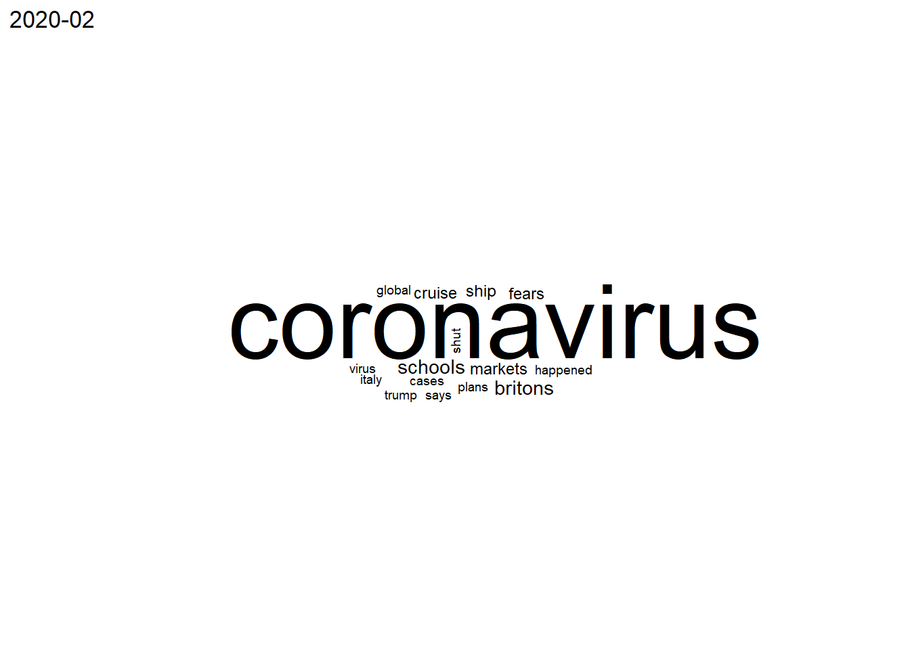

A Guardian napilap COVID-19-el kapcsolatos címeinek elemzése
Guardian headlineok
#521-ig lehetett visszamenni a keresésben
for (i in 1:100) {
URL <- paste("https://www.theguardian.com/world/coronavirus-outbreak+uk/uk?page=", i, sep = "")
page <- read_html(URL)
title <- html_text(html_nodes(page, ".js-headline-text"))
time <- html_text(html_nodes(page, ".fc-date-headline"))[1]
#Van olyan hogy egy lapon két dátum is szerepel, heti bontás miatt ez nem probléma
if (i==1){
data_raw <- data.frame(time, title)
}
else{
data_raw <- rbind(data_raw, data.frame(time, title))
}
}
#Nem volt olyan CSS kód ami egyértelműen jelölte volna ki a címeket, így duplikálva kerültek be a
#dataframebe, minden másodikat ki kellett törölni
data_cleansed <- data_raw %>% filter(!duplicated(title)) %>% {mutate(., id = seq(nrow(.)))} %>%
mutate(
date = as.Date(time, format = "%d %B %Y"),
month = format(date, "%Y-%m")
)Bag of words a címekből
corpus_raw <- Corpus(VectorSource(as.character(data_cleansed$title)))
#Korpusz tisztítása
corpus_filtered <- corpus_raw %>% tm_map(content_transformer(tolower)) %>% tm_map(stripWhitespace) %>% tm_map(removeNumbers) %>% tm_map(removePunctuation, ucp=TRUE) %>% tm_map(removeWords, c(stopwords("english"), "also", "one"))Strukturált mátrix és a fogalmak eloszlása
termdocument <- removeSparseTerms(TermDocumentMatrix(corpus_filtered), 0.999)
documentterm <- removeSparseTerms(DocumentTermMatrix(corpus_filtered), 0.999)
words_frequency_all <- data.frame(Words=row.names(as.matrix(termdocument)), Freq=rowSums(as.matrix(termdocument), na.rm = TRUE))
findFreqTerms(documentterm, lowfreq = 100) [1] "covid" "video" "england" "new" "says"
[6] "tier" "vaccine" "johnson" "christmas" "coronavirus"
[11] "happened" "lockdown" Havonta elemzés
data_cleansed_monthly <- data_cleansed %>% group_by(month) %>% summarise(monthly_text = paste(title, collapse = " "))
#Táblázat létrehozása
words_monthly <- data.frame(matrix(ncol=nrow(data_cleansed_monthly), nrow=15))
colnames(words_monthly) <- data_cleansed_monthly$month
for (i in 1:nrow(data_cleansed_monthly)){
#Corpus létrehozása
corpus_monthly_raw <- Corpus(VectorSource(as.character(data_cleansed_monthly$monthly_text[i])))
#Korpusz tisztítása
corpus_monthly_filtered <- corpus_monthly_raw %>% tm_map(content_transformer(tolower)) %>% tm_map(removePunctuation, ucp=TRUE) %>% tm_map(removeNumbers) %>% tm_map(removeWords, c(stopwords("english"), "also", "one"))
#%>% tm_map(stemDocument)
#Term-Document mátrix létrehozása a 10 leggyakoribb szó miatt
matrix_monthly <- removeSparseTerms(TermDocumentMatrix(corpus_monthly_filtered), 0.999)
words_frequency <- data.frame(Words = matrix_monthly$dimnames$Terms, Freq = matrix_monthly$v)
words_monthly[,data_cleansed_monthly$month[i]]<- head(words_frequency[order(-words_frequency$Freq),]$Words,15)
#Szófelhők készítése, a corpus nagyságától függően
plot(ggwordcloud(words_frequency$Words, words_frequency$Freq, max.words = 100)+
ggtitle(data_cleansed_monthly$month[i]))
#wordcloud(corpus_monthly_filtered, max.words=0.1*matrix_monthly$nrow)
}
2020-10 2020-11 2020-12
1 covid covid covid
2 lockdown lockdown christmas
3 tier england vaccine
4 says vaccine england
5 england says new
6 coronavirus christmas says
7 happened johnson tier
8 manchester new boris
9 boris coronavirus video
10 government happened johnson
11 johnson will rules
12 people boris happened
13 will video coronavirus
14 englands people lockdown
15 greater nhs willSentiment elemzés
#AFINN lexikon betöltése
AFINN <- get_sentiments("afinn")
#Szavakra bontás, pontszámok összeaggregálása
words <- left_join(unnest_tokens(data_cleansed, words, title), AFINN, by=c("words"="word"))Error in check_input(x): Input must be a character vector of any length or a list of character
vectors, each of which has a length of 1.Error in UseMethod("group_by_"): no applicable method for 'group_by_' applied to an object of class "function"Error in UseMethod("group_by_"): no applicable method for 'group_by_' applied to an object of class "function"Error in is.data.frame(y): object 'score_by_id' not found#Napi (és heti) aggregálás
score_by_day <- data_cleansed %>% group_by(date) %>% summarize(score_sum=sum(score, na.rm=TRUE), score_avg=mean(score, na.rm=TRUE))Error: Problem with `summarise()` input `score_sum`.
x object 'score' not found
i Input `score_sum` is `sum(score, na.rm = TRUE)`.
i The error occured in group 1: date = 2020-10-14.Ábrázolás
ggplot(nr_sentiment_words, aes(x=date)) +
geom_line( aes(y=non_na_count), size=.5, color="#0fad04")+
xlab("Dátum") + ylab("AFINN-ban szereplő szavak száma") +
ylim(0, 100)+
geom_hline(yintercept=0, color="black", size=.75) +
theme_ipsum()Error in ggplot(nr_sentiment_words, aes(x = date)): object 'nr_sentiment_words' not found ggplot(score_by_day, aes(x=date)) +
geom_line( aes(y=score_avg), size=.5, color="#0fad04") +
xlab("Dátum") + ylab("Átlagos napi érzelmi pontszám") +
ylim(-5, 5)+
geom_hline(yintercept=0, color="black", size=.75) +
theme_ipsum()Error in ggplot(score_by_day, aes(x = date)): object 'score_by_day' not found